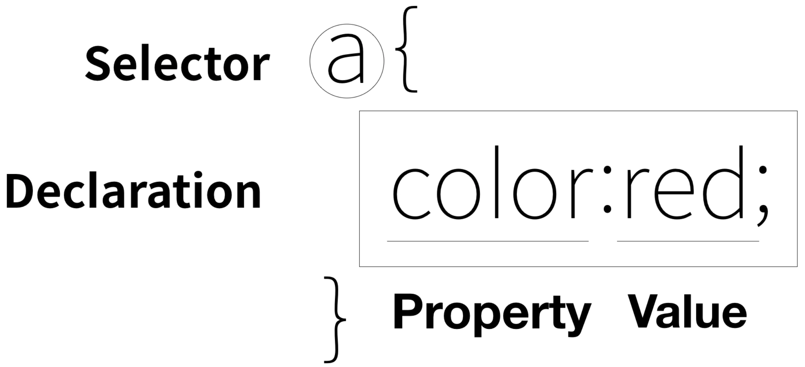
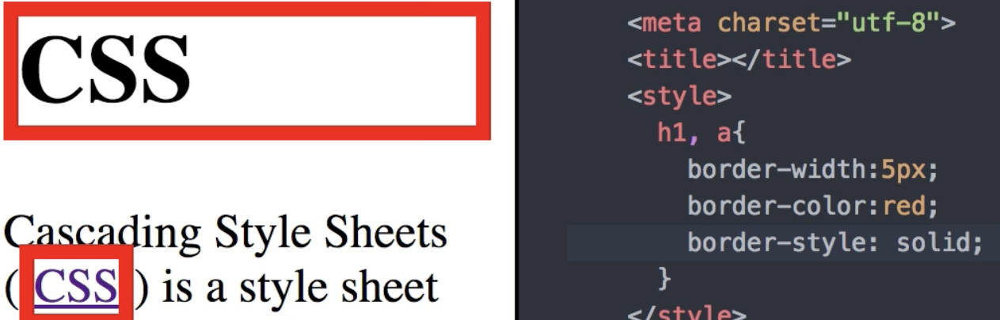

CSS의 정의
CSS(Cascading Style Sheets)는 웨 문서에 스타일(글꼴, 색상, 간격 등)을 추가하기 위한 기술이다.
출처:https://www.w3.org/Style/CSS/Overview.en.html
CSS의 등장
HTML은 정보를 표현하기 위해서 고안된 언어다. 사람들은 웹페이지를 아릅답게 만들기 위해서 고민했다. 그래서 디자인에 대한 코드가 많이 추가됐지만 무분별하게 추가된 디자인 기능은 정보로서 웹이라는 가치를 퇴보시켰고, 이를 극복하기 위해서 CSS를 개발했다.
CSS의 등장 이전에는 태그마다 일일이 태그를 입력해야 했다. 예를들면 태그 100만개의 글자색을 빨간색으로 바꾼다면 100만번의 font color="red"를 입력해야 했다. font color="red"라는 태그는 정보가 아닌 그냥 문서를 꾸미는 약속이라 정보의 가치가 없고, 방대한 작업을 할 때 일의 효율을 낮춘다. CSS는 그런 작업을 간소화할 수 있다.
CSS 사용
CSS는 태그에 style이라는 속성을 사용한다. 태그에서 스타일속성을 사용하면 이 뒤는 스타일의 규칙을 따른다.

선택자(Selector)는 CSS효과를 적용할 대상을 가리킨다. 선택자의 대상은 {}안에 들어간다. 효과(Declaration, 선언)는 말그대로 효과를 말하고 속성(Property)과 속성값(Property Value)으로 이뤄진다. 위 그림에서 a{}는 전체 a태그에 {}안의 효과를 적용한다는 뜻이다. 그 효과는 color속성에 빨간색 속성값을 나타낸다.
속성은 동시에 여러개를 입력할 수 있고 ;으로 구분한다.
선택자 예시
w3 - CSS Selector Reference
CSS 명령어 찾는 방법
글자 크기에 대한 명령어가 필요하다면 검색엔진에서 CSS text size property라고 검색한다.
명령어
color:black;
text-decoration:none;
text-decoration:underline;
text-weight;
CSS box model
화면 전체를 쓰는 태그 몇 십개와 block level element
줄바꿈하지 않고 자기의 컨텐트 크기만큼 공간을 사용 = inline element
(/**/이렇게하면 CSS에서는 주석임.)

테두리의 스타일, 단선, 점선, 실선인지 지정.
이 컨텐츠의 내용과 테두리 사이에 간격 조절. padding:20px;
테두리 바깥의 간격 조절. margin:0;
그리드
그냥 ol태그로 padding-left하면 본문에 모든 ol태그가 적용된다. 그래서 id선택자 "grid"면서 "ol" 선택자인 곳으로 특정한다.
반응형 웹(미디어 쿼리 이용)
반응형 웹(responsive web)이란 화면의 크기에 따라 웹페이지 디자인이 변하는 웹을 말한다.
미디어의 가로 길이가 최대 800px일 때까지 이하를 적용. #grid 디스플레이를 블록으로, h1의 아래 모서리와 ol의 rt모서리를 표시안해.